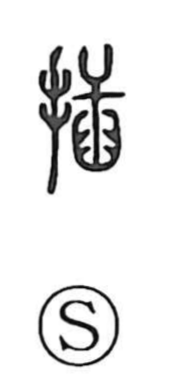

挿

Uncategorized
Kun: sasu, sashikomu, sashihasamu | On: sou
to insert ・ to stick in ・ to plug
Explanation
挿 is a phono-semantic character, originally written 插. It combines the hand sign with the phonetic 臿, a graph that depicts a plow-like tool thrust into the earth. Together they picture holding such a tool to plant saplings or stakes in the soil, giving the sense of inserting or piercing. Hence the character is used for sasu, sashikomu, and sashihasamu. The Shuowen glosses it as “to pierce and put into,” stressing the idea of planting firmly and deeply.